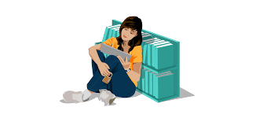

Thorium Reader is the Reading Application of choice for Windows 10, MacOS and Linux.
This EDRLab application is in constant development and aims at becoming a reference for accessing EPUB publications , PDF documents, audiobooks and visual narratives, LCP protected or not.
It is localized in a large set of languages, each version offering new languages.
Huge efforts are also made to get Thorium Reader highly accessible for visually impaired and dyslexic people.
This application is free, with no ads and no leaks of private data.
This is the perfect tools for heavy readers, library patrons and students.
EPUB 2: this is a legacy format, only adequate for basic ebooks. Textual content is formatted in XHTML 1 and no multimedia feature is supported. EPUB 2 ebooks are still accessible if properly formatted.
EPUB 3: this is the recommended format for the 21st century. Textual content is formatted in (X)HTML 5, it is possible to create fixed-layout ebooks, enriched ebooks and accessibiltiy features are well designed.
PDF: despite a well-known lack of flexibility (no reflow option) and accessibility, many ebooks are still available in PDF only, especially in public libraries.
audiobooks: a standardized format for audiobooks has been designed by the W3C Publishing Working Group in 2020, and EDRLab was part of this WG. Thorium is supporting the packaged (LPF) audiobook format, which will soon be widely used by booksellers, or so we hope.
visual narratives: EDRLab has designed a standard format for comics, manga, webtoons and other styles of digital works based on sequances of images. Divina is the name of this format. This is still an experimental format, and we hope that publishers will size it in 2021+.
EDRLab has strong relationships with the DAISY Consortium, and we want to make Thorium Reader one on the most accessible reading application on the market; better than most commercial products.
The application is therefore fully adapted to screen readers like JAWS, NVDA or VoiceOver and is entirely usable from the keyboard. Keyboard shortcuts are configurable by the user to fit his personal preferences.
Many Public Libraries and booksellers are adopting OPDS as a standard way to expose their catalogs on the Web.
Using OPDS, libraries and booksellers can also expose the personal bookshelf of a patron or customer, i.e. the ebooks the user has acquired and can immediately download and read.
Thorium can browse OPDS 1 and 2 catalogs. It also supports several OPDS compliant authentication mechanisms, and can therefore allow users access to their personal bookshelf.
Thorium Reader supports the Readium LCP DRM, originally designed by the Readium Foundation.
The specification of this DRM is public, and this is an ISO Technical Specification under the reference ISO 23078-2.
LCP has already been adopted by many Public Libraries, Universities and booksellers around the world (a list is maintained here).
Organizations in the publishing sector, worldwide, are encouraged to adopt LCP as a way to protect ebooks against oversharing, while offering to users a frictionless experience and keeping content properly accessible. Please contact EDRLab if your organization is interested by adopting LCP.
Copyright 2019 European Digital Reading Lab. All rights reserved.
Licensed to the Readium Foundation under one or more contributor license agreements.
This application is open-source, released under a BSD 3 license. It is based on the open-source Readium Desktop toolkit.
EDRLab is a non-profit organization. Our budget essentially originates from our members. EDRLab started in France, but its members are now from Europe, North America, South America and Asia.
This project would have not seen the light without:
1- The financial implication of our French founding members: Editis, Hachette Livre, Magrigall, Media-Participations, Cercle de la Librarie, Syndicat national de l'Edition. They understand that financing open-standards and open-source is the best way to energize an open and innovative market for the publishing industry.
2- Financial grants from the following French public organizations:
3- Additional grants from our members:
You can also help Thorium Reader becoming a better application by becoming an EDRLab member.
Alternatively, you can donate to EDRLab via the Github Sponsor "piggy-bank", which accepts small monthly donations.
Accessibility
OPDS Catalogs
Readium LCP DRM

Licensing
Who is financing this app